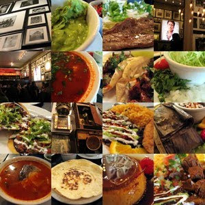

Comida típica
La cocina tradicional salvadoreña refleja las cost umbres de los antiguos pueblos, conservándose
siempre como elemento principal el maíz.
La comida típica salvadoreña es una deliciosa mezcla de la comida indígena con la española.
Las Pupusas
El término pupusa viene del nahualt pupushahua que significa tortilla rellena de queso , frijoles,
chicharrón, ayote, crema, zanahoria.
Generalmente son elaboradas a base de masa de maíz, aunque hay quienes las prefieren de masa de arroz.
Las dos variedades se acompañan de curtido y salsa. Las pupusas son tortillas hechas de masa de maíz o de arroz rellenas con queso,
frijoles, chicharron, revueltas (chicharron y frijoles o frijoles y queso).
Aunque también hay más variedades, como camarón o chacalines y pescado. Se comen con curtido de repollo y hay quienes las prefieren con salsa de tomate natural.
Las mas comunes son las que se hacen con masa de maíz.
Las de arroz se comen generalmente en las afueras de la ciudad capital, siendo la cuna de las pupusas de arroz Olocuilta, ubicado en el departamento de La Paz.
La tortilla
Es elaborada de maíz y es la base de la alimentación de los salvadoreños. El maíz molido se amasa y se hacen discos que se echan sobre un comal caliente para coserlo.
Los tamales
Son elaborados de la masa del maíz, un relleno (carne de gallina, de pato o de cerdo, de frijoles, de flor de izote, de ejote, de chipilín)
y salsa o recaudo. Los tamales se elaboran generalmente para festejar.
A mediados de la década de 1970, aparecen en el mercado las computadoras de
La Horchata
El nombre proviene de el catalán orxata, probableme nte derivado de la palabra ordiata, hecha de ordi (cebada). La horchata es una bebida de consistencia
lechosa hecha a generalmente a base de semillas (de chufa, morro, cacao, arroz, ajonjolí, linaza, almendras, etc.) o arroz. En El Salvador, la horchata tradicional es a base de morro, semilla de ajonjolí, canela, y cocoa.
La yuca
es un arbusto perenne de la familia de las euforbiáceas, autóctona y extensamente cultivada en Sudamérica y el Pacífico por su raíz almidonosa de alto valor alimentario.
Se puede servir sancochada o frita, acompañada de curtido, salsa criolla con pedacitos de chicharrón o pepesca (pescaditas de río). Generalmente se sirve en hojas de huerta. |
 |